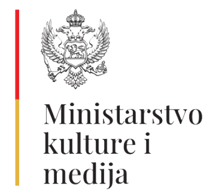
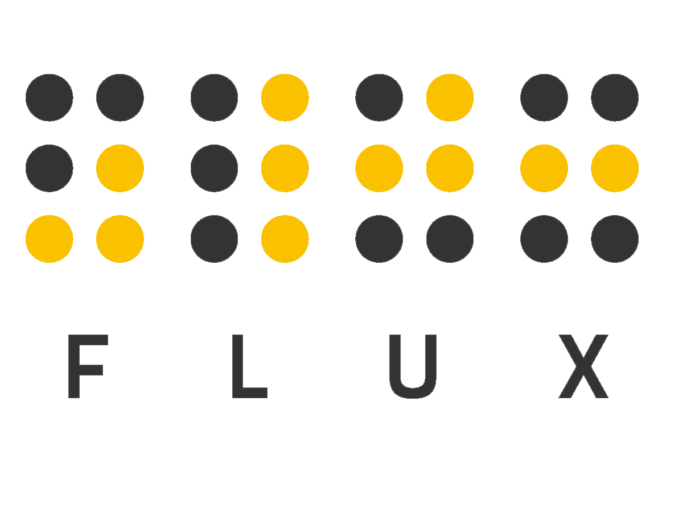
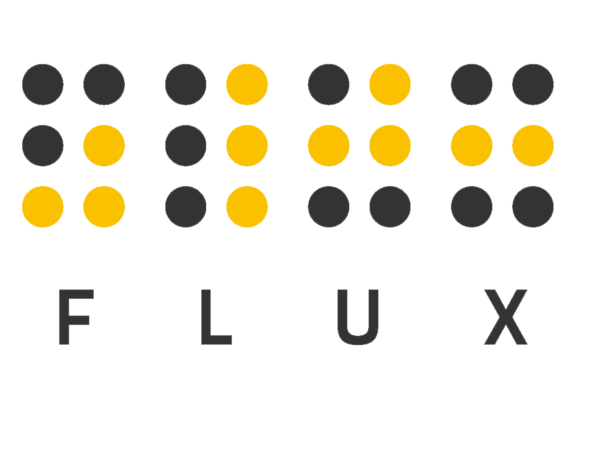

O projektu
GeoCulture istražuje odnos kulture i prostora: kako se pejzaž pojavljuje u umjetnosti, kako se kulturni sadržaji geografski raspoređuju, i kako javno dostupna mapa koja ih povezuje može postati alat za učenje, istraživanje i interpretaciju.
Polazište projekta je ideja da se umjetnička djela ne posmatraju izolovano, već u odnosu na prostor koji ih je oblikovao, koji prikazuju ili na koji referišu.
Produkcija
Directa Consulting
Tehnička i produkciona realizacija
Uz podršku

Ministarstvo kulture i medija Crne Gore
Podrška razvoju tehničke platforme projekta GeoCulture
Trenutni obuhvat
- Umjetnička djela (slike, crteži, grafike, fotografije)
- Muzejske i arhivske zbirke, online baze i privatne kolekcije
- Svaki unos sadrži metapodatke, reprodukciju i prostornu referencu


 
